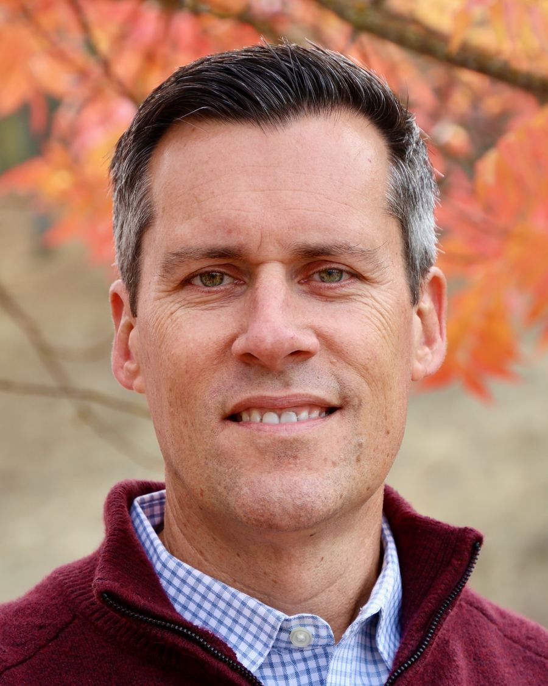

Win the right customers.
I work with founders on technical positioning, enterprise sales, and the transition from early proofs of concept to a repeatable customer motion.
Operator · Investor · Advisor
I work with early-stage AI companies on the path from technical promise to customer value, bringing 25+ years of building technical go-to-market teams and a hands-on approach to investing and advising.

Based in the San Francisco Bay Area.
Pre-seed and seed B2B AI companies helping enterprises deploy AI, with a focus on evaluation, governance, and observability.
Working with founders
I’ve spent my career at the intersection of technology, customers, and company building. Today, I bring that experience to founders navigating enterprise adoption, working alongside investors and advisors to help portfolio companies make progress.
I work with founders on technical positioning, enterprise sales, and the transition from early proofs of concept to a repeatable customer motion.
I help teams connect product capabilities with customer needs, drawing on experience building solutions engineering and technical adoption programs.
I help founders pressure-test their fundraising story and connect with relevant investors and advisors, bringing an operator’s perspective to work with portfolio companies.
Selected work
A few examples of how I approach investment judgment, founder support, and the tools that make both more effective.
My research looks at where value settles as enterprises put AI agents into real workflows. Whichever platforms win, every deployment has to clear the same bar: proving the agent works, controlling what it can touch, and seeing what it did. That trust layer is where I focus. My approach emphasizes primary sources, explicit assumptions, and evidence that could challenge the thesis.
I built an AI-assisted diligence workflow with Claude Code to organize research, compare evidence, and examine investment assumptions. The workflow brings structure to complex questions while keeping source verification and human judgment central. Building the workflow myself also deepened my understanding of where AI assistance is useful and where investment judgment still requires careful scrutiny.
At the Silicon Valley Boilermaker Innovation Group, I help Purdue-connected founders with go-to-market strategy, enterprise sales, technical positioning, and investor pitches. For Cohorts 17 and 18, I co-led a redesign of applicant evaluation with AI-assisted analysis and a calibrated rubric. I also built a mentor-matching process that connects selected companies with advisors based on their needs.
Operating experience
Before focusing on investing and advising in 2023, I built and led customer-facing technical, services, and product marketing organizations at growing technology companies.
Full experience on LinkedIn ↗Built Solutions Consulting and Business Value Consulting, then led Product Marketing. Helped grow the business from under $1M to over $30M ARR and led go-to-market integration for Thankful AI.
Built Field Engineering for Stripe’s largest and most complex customers. Established Solutions Architecture, grew the team to 30+ engineers across seven countries, and scaled Developer Support to 24/7 coverage.
Led services and onboarding at Gainsight. At Hortonworks, scaled the global Services and Education organization from 35 to 100+ employees.
As VP of Product, led product strategy, product management, and product marketing for an open-source cloud platform, including an AWS API-compatibility partnership. Previously built the Services and Training business to more than $1M in revenue and profitability in its first year.
Built a portfolio of services, adoption offerings, and software tools supporting enterprise customers and the partner ecosystem. Built and led the global Technical Account Manager program, with 130+ TAMs serving 600+ enterprise accounts and more than 90% customer satisfaction.
Ecosystem and mentoring
I enjoy helping founders and emerging investors develop their own judgment, and contributing to the communities that connect them.
A 2023 alumnus, I returned in August 2026 as a capstone mentor. I led seven emerging investors from venture firms, accelerators, and ecosystem organizations through three working sessions on investment frameworks and venture career strategies.
During the 2026 Venture Fellows Program, I deepened my practice in investment research, sourcing, and diligence, with a focus on AI infrastructure. The experience helped me bring my operating background to evaluating companies and supporting founders.
I serve on the Purdue Alumni Association’s board of directors. Alongside my work with Purdue-connected founders at SVBIG, this keeps me actively involved in the university’s alumni community.
Board of directors ↗Let’s connect
If you’re working on an early-stage AI company, navigating enterprise go-to-market, or building a startup ecosystem, I’d enjoy comparing notes.